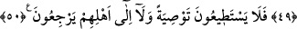

ANSIZIN YAKALAYACAK
KORKUNÇ BİR SES
41. Onların zürriyetlerini dopdolu bir gemide taşımamız da onlar için büyük bir
ibrettir.
42. Onlar için, bunun gibi binecekleri başka şeyler de yarattık.
43. Dilesek onları suda boğarız. O zaman ne onların imdadına koşan olur, ne de
onlar kurtarılırlar.
44. Ancak bizim tarafımızdan bir rahmet ve belli bir zamana kadar dünyadan
faydalandırmamız müstesnadır.
45. Onlara yapmakta olduğunuz ve yapıp arkada bıraktığınız işlerde Allah’tan
korkun; umulur ki size merhamet olunur denildiğinde (aldırmazlar).
46. Onlara Rablerinin âyetlerinden bir âyet gelmeyedursun, ille de ondan yüz
çevirmişlerdir.
47. Allah’ın size rızık olarak verdiklerinden hayra sarfediniz, denildiğinde,
kâfirler müminlere dediler ki: Allah’ın dilediği takdirde doyuracağı kimseleri biz mi
doyuracağız? Siz gerçekten apaçık bir sapıklık içindesiniz.
48. Onlar: Eğer gerçekten doğru söylüyorsanız, bu tehdit ne zaman
gerçekleşecektir? derler.
49. Onlar, birbirleriyle çekişip dururken kendilerini ansızın yakalayacak korkunç
bir sesi bekliyorlar.
50. İşte o anda onlar ne bir vasiyette bulunabilirler, ne de ailelerine dönebilirler.